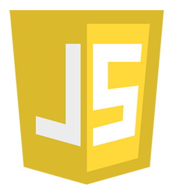
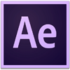

- Nombre:
- Alejandro
- Apellidos:
- Ruiz López
- Fecha de Nacimiento:
- 01-03-1983
- Dirección
- C/ Arroyo Hondo Nº45 3ºE
- Ciudad
- Vélez-Málaga
- Provincia
- Málaga
- Permiso de conducción B y Vehículo propio
- HTML

- CSS

- Javascript 
- PHP

- Symfony
- Bootstrap

- Wordpress

- Illustrator

- Photoshop
- After Effects 
- InDesign

- Autodesk 3ds Max
- Autodesk Autocad